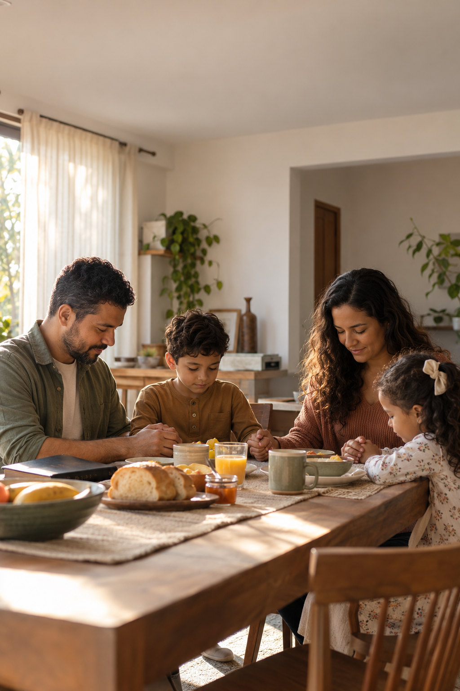

Presença que deixa marcas
Reduza as distrações e construa momentos que seus filhos levarão para a vida.
GUIA GRATUITO • LEITURA DE 15 MINUTOS
Sete atitudes práticas para homens que desejam fortalecer sua fé, cuidar do casamento e estar mais presentes na vida dos filhos — uma decisão por dia.
Quero receber o guia →Gratuito, prático e direto ao ponto. Cancele os e-mails quando quiser.
UM GUIA PARA QUEM NÃO QUER APENAS PROVER
mas também estar presente, conduzir e construir.O QUE VOCÊ VAI PRATICAR
Reduza as distrações e construa momentos que seus filhos levarão para a vida.
Leve a Palavra para a rotina sem transformar o lar em um discurso.
Práticas simples para ouvir, corrigir e recomeçar com sabedoria.

POR DENTRO DO GUIA
Conteúdo original do Projeto Legado, fundamentado em princípios bíblicos e pensado para a rotina real da família.
COMECE HOJE
Receba gratuitamente o guia 7 atitudes que começam em casa e escolha a primeira mudança que sua família perceberá.
Ao se cadastrar, você concorda com nossa Política de Privacidade.